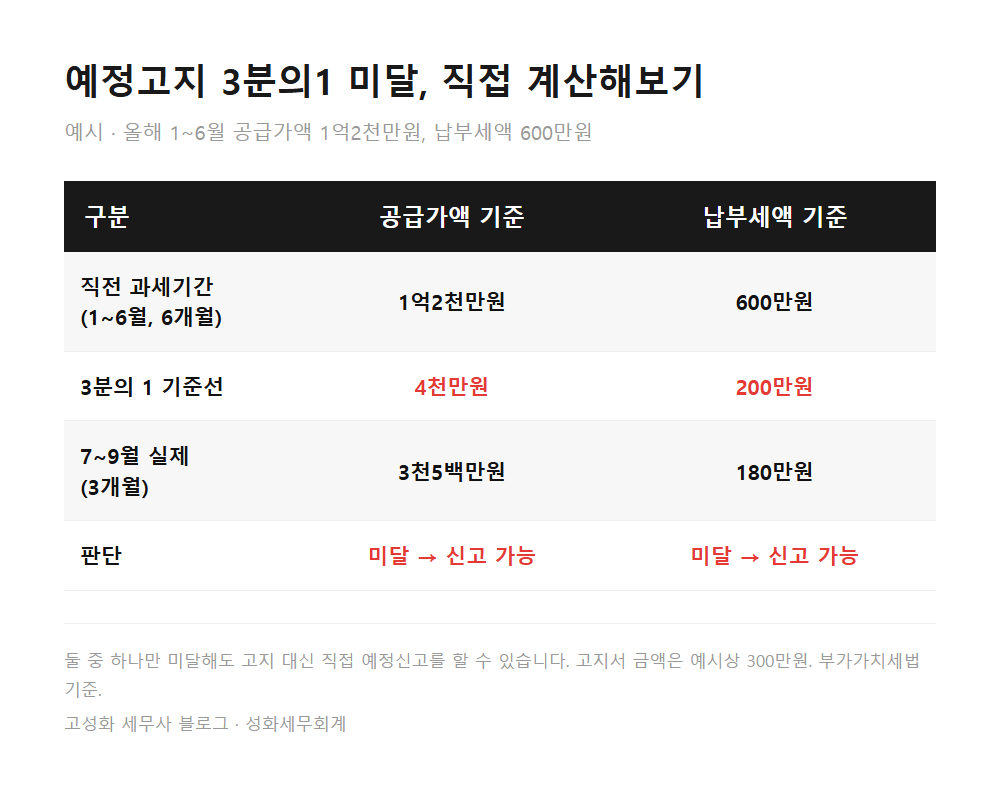
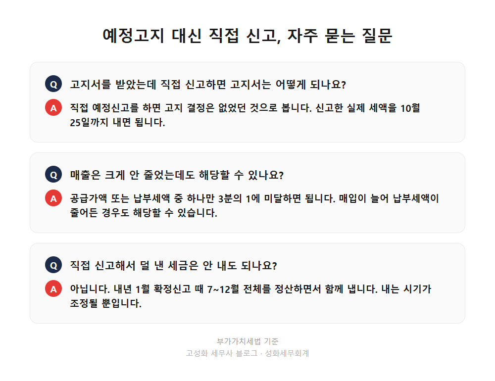

부가세 예정고지 3분의1 미달 계산, 3개월과 6개월 비교법 2편

예정고지서를 받았더라도, 7월부터 9월까지의 공급가액이나 납부세액이 직전 과세기간(올해 1~6월)의 3분의 1에 못 미치면 고지서 대신 직접 예정신고를 하고 실제 세액만 낼 수 있습니다. 신고는 10월 25일까지 하면 되고, 이렇게 신고하면 받은 고지는 없었던 것으로 처리됩니다.
이 글을 보고 계신 분은 ① 고지서 금액이 지금 매출에 비해 너무 크다고 느끼는 개인사업자 ② 1억5천만원 미만이라 고지를 받은 소규모 법인 대표님 ③ 하반기에 휴업했거나 매출이 확 줄어든 분일 겁니다.
지난 1편에서는 누가 직접 신고하고 누가 고지서만 받는지 정리했습니다. 고지 대상은 개인사업자와 직전 과세기간 공급가액 1억5천만원 미만 법인이고, 고지 금액은 직전 납부세액의 절반이라는 내용이었습니다.
- 예정고지 3분의1 미달, 비교하는 기간이 다릅니다
- 숫자로 넣어보면 이렇습니다
- 직접 신고로 바꿀 때 실무에서 놓치는 것
한눈에 보기



자주 묻는 질문
예정고지서를 받았는데 직접 신고하면 고지서는 어떻게 되나요?
직접 예정신고를 하면 고지 결정은 없었던 것으로 봅니다. 신고한 실제 세액을 10월 25일까지 내면 됩니다.
매출은 크게 안 줄었는데도 해당할 수 있나요?
공급가액 또는 납부세액 중 하나만 3분의 1에 미달하면 됩니다. 매입이 늘어 납부세액이 줄어든 경우도 해당할 수 있습니다.
직접 신고해서 덜 낸 세금은 안 내도 되나요?
아닙니다. 내년 1월 확정신고 때 7~12월 전체를 정산하면서 함께 냅니다. 내는 시기가 조정될 뿐입니다.
정리하면
부가세 예정고지는 직전 납부세액의 절반으로 정해지지만, 7~9월 공급가액이나 납부세액이 직전 6개월의 3분의 1에 못 미치면 직접 신고로 바꿔 실제 세액만 낼 수 있습니다. 석 달 대 여섯 달을 비교하므로, 월 매출이 3분의 1 남짓만 줄어도 대상이 될 수 있습니다.
내 경우 기준선이 얼마인지, 매입까지 반영하면 어느 쪽이 맞는지는 자료를 맞춰봐야 정확합니다. 고지서 금액만 보고 그냥 내려던 참이라 이런 걸 물어봐도 되나 싶으실 수 있는데, 오히려 이런 확인이 10월 자금 사정을 바꿉니다. 기한이 10월 25일이니 그 전에 편하게 문의 주세요.
다음 글에서는 설비 투자나 수출로 매입세액이 큰 사업자가 부가세 조기환급을 받는 경우와 신고 방법을 다루겠습니다.
본문 전체와 근거 조문은 블로그에서 확인하실 수 있습니다.